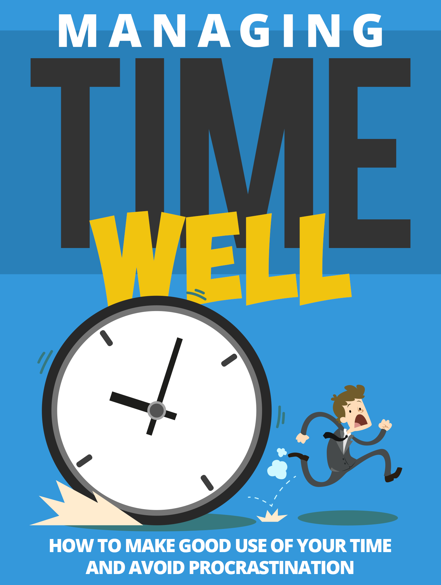

"Grab This Lucrative Training Guide Right Now And Unlock The Secrets To Achieving ANY Goal You Want In Life!"

What If You Have All The Tools And Techniques You Will Ever Need To Set All The Right Goals And Get Any Result You Want In Life? This Guide Will Show You How!
Dear Friend,
Do you have this sinking feeling that no matter what you do or how hard you try, you will always wind up falling short when achieving your goals?
It's weird...
No matter how hard you try and set your goals, whether big or small, it is always missing the mark. Even after adjusting the goals or setting the bar lower, it just doesn't turn out well...
When I started out, I was running around like a headless chicken too... I thought that by just having a good time table and carefully laid out plan right in front of me, there is no way I can go wrong...
I even attended many time management courses in order to reach my goals but I always fall flat on my face!
Little did I realize that...
"Not Only Do Most People Fail Miserably In Achieving Goals, They Always Wind Up Setting The Wrong Goals That Will Turn Their World Upside Down..."
Let's be truthfully realistic here…
The majority of the world do not know what they truly want in life. This is a sad fact and you may be one of them. Please don't get worked up when I say this because this is just a statistic.
The reason why I say this is because most people think they are doing great in life climbing the ladder of success - unfortunately they subconsciously believe that their ladders are leaning against the wrong wall!
So what does this has to do with goal setting and getting results?
Everything, in fact!
Only when you truly know how to find your true calling, will you have really strong, unstoppable energy when it comes to accomplishing your goals.
It is like a famous baseball player - they get up every morning to play baseball... they LOVE what they do and they get paid lots and lots of money doing it at the same time! Is it a coincidence that they are very successful? Do you think they will go, "Aww... shucks! I have to wake up and play baseball, AGAIN?"
That's the secret to success!
But this still doesn't solve the whole problem of goal setting yet...
Make no mistake about it...
"You Need To Have A Big Dream To Have A Strong Goal, But Motivation Can Only Get You Started In The Short Run Only..."
Why is it that people still fail in spite of wanting something?
Yes you can say that they don't want something bad enough - but that is not truly the case.
A person can 'want' to fly to the moon, but without a rocket to take you there, it is going to be nothing but wishful thinking!
Other times, people lose energy.
Perhaps you've felt that:
- You set a goal to go to the gym but half way, you feel tired and you rest...
- Other times, you set a goal to make money but you see no results
- You want to get on a date but you lack the courage after a few rejections
- Discouragement sets in...
- You don't have the energy anymore...
At the end of the day, you realize that not only is it important to have a big dream and set good goals, but your 'reward system' just isn't that enticing to keep you going. You can only stretch yourself so much before you get exhausted.
Tiring, isn't it?
But here's the good news...
"What If You Had The Exact Tools You'll Ever Need To Rewire Your Mental Blueprint And Start Getting REAL Results?"
Imagine... if you have everything you'll ever need to jumpstart your knowledge and learn the truth on this important subject...
Don't you want to accomplish your goals faster?
I know you will want to and that is why I've taken the time to compile this entire guide for you.
I've gone through the same problems as you and trust me, it wasn't a walk in the park!
Getting results means getting yourself equipped - completely armed to the teeth when it comes to this subject.
Like going to war, it is time to divert your full attention and be fully present - know the subject inside out and outside in.
You don't want to waste time anymore because life is short.
Are you ready to learn the truth?
Behold...
Introducing…
Managing Time Well
How to Make Good Use of Your Time and Avoid Procrastination
You will never find a more complete goal setting series other than what is laid before your eyes.
With this powerful guide book at your disposal, you will not lack a single thing when it comes to understanding the intricate secrets of achieving your goals.
Who Can Use This Book?
- Business owners
- Internet marketers
- Network marketers
- Life Coaches
- Personal Development Enthusiasts
- Self Improvement Bloggers
- Web Publishers
- Writers and Content Creators
And Many More!
In This Book, You Will Learn:
- Leadership Calls For Time Management.
- What Causes Poor Time Management
- Procrastination
- Realizing Your Present Productivity.
- How To Prevent Disasters!
- Learn To Delegate!
- And so much more!
"Why It Is Very Important For You To Invest In This Book Right Now..."
What's really important now is NOT the pittance you'll invest in this book but how much you'll LOSE OUT if you don't!
Understand that time and tide waits for no man (or woman).
Don't let whatever considerations stand in the way between you and your success.
You see, how much longer are must people learn the HARD WAY before investing in themselves?
Think about how much money you can earn if you really applied the strategies in this book. You could be using your life effectively, making hundreds or even thousands of dollars in a short period of time, compared to wasting it in ineffectiveness!
I cannot even begin to imagine someone who would lose this - it's just scary!
Thankfully, you are a sharp person... otherwise these things will not resonate with you.
"Grab Your Copy Today, Even If It Is 2 A.M. In The Morning!"
As soon as your order is processed, your eBook will be available for immediate download so you can start on your journey to online success right away. P.S. It really is simple, but you need to know what to do. Learn what really works and how you can put it into practice today!
Click here to get it now!